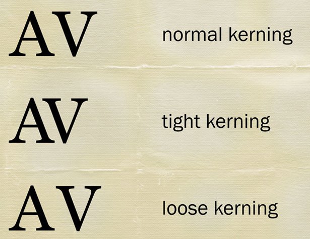
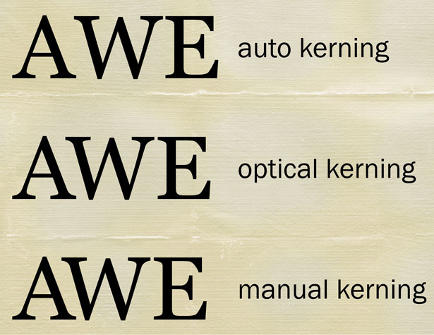
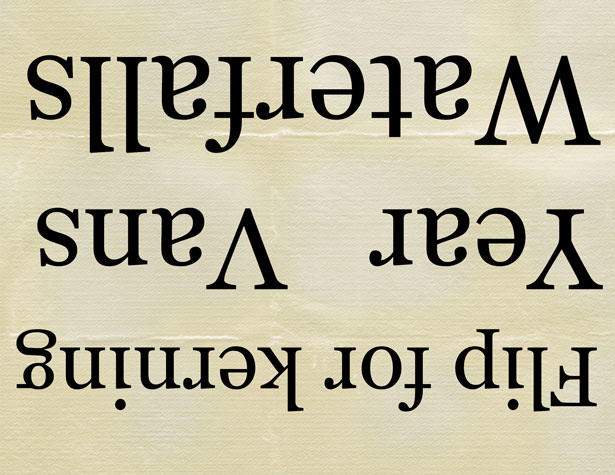
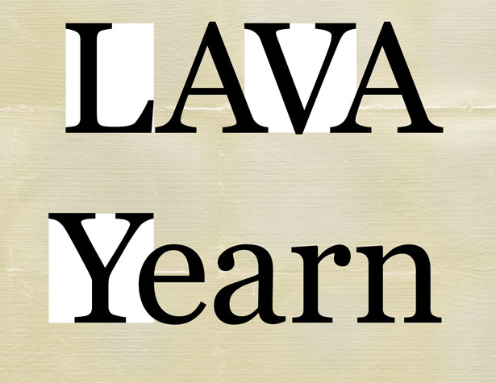
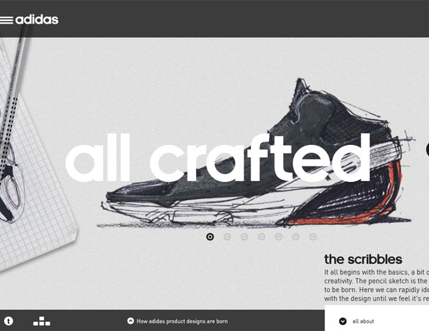
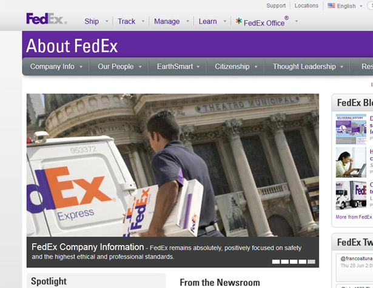
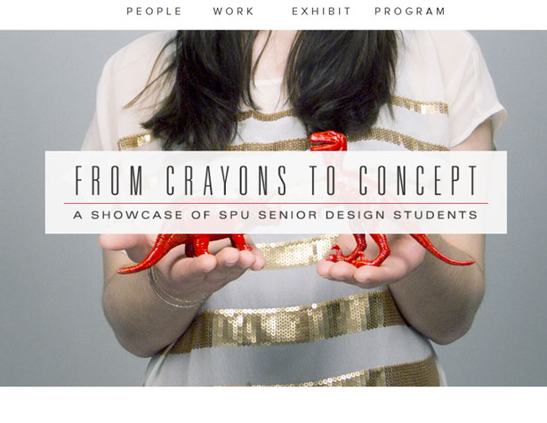
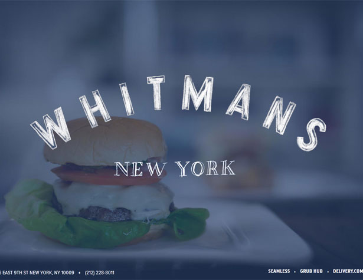
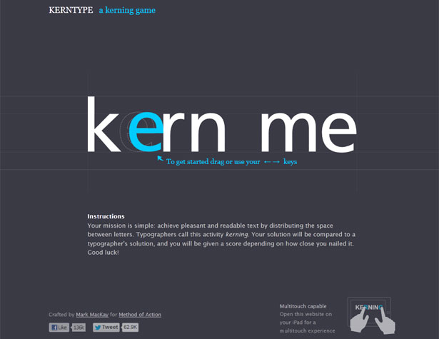

Kerning in Practice: Beware Odd Letter Spacing
By Carrie Cousins
While kerning of type is a common practice in print design, it seems to be less common in web applications. But it does not have to be.
Properly kerned type adds an extra level of professionalism and control to the typography on your site. While there are some software add-ons that can add (or remove) automatic kerning, most designers prefer to manually adjust lettering as necessary.
For some text and letter combinations, kerning adjustments are a must. In other situations, it can be unnecessary. Keep in mind as well, that most professional typefaces contain automatic kerning for the most troublesome letter pairs, such as AV.
But when do you need to adjust the kerning yourself?
WHAT IS KERNING?
Kerning is the adjustment made to the space between a pair of letters. Kerning only affects the space between the pair and not the overall space between all the letters being typeset.
Each letter has two potential kerning partners – the character to the left or the character to the right.
Almost any professional-grade graphics software (such as Adobe Photoshop or Fireworks) will allow you to make such adjustments. The kerning icon is typically represented by an “A\V” symbol with arrows above and below the characters. The space widens as the number grows and the space becomes more narrow as the number decreases.
Kerning adjustments for web design are more uncommon than in print design because making changes is not particularly easy. That being said, it still should be a consideration because of the influence it has on overall design.
In kerning the look you are trying to achieve may vary, but generally the hope is to more evenly distribute letter spacing so that the spaces between each set of letter pairs is consistent with surrounding pairs.
KERNING VS. TRACKING
Kerning and tracking are not the same thing. While kerning refers to the space between two specific letters, tracking refers to the overall letter spacing in a selection of letters. Tracking is used to create a more uniform space adjustment between letters and groups of letters (even entire paragraphs or documents) can be adjusted with a single tracking change.
To further complicate matters, a designer can first adjust the tracking of a block of text and then go in and adjust kerning to improve the overall look of the text. But you want to make sure to adjust tracking first, then adjust kerning. Working the other way around will most likely negate your kerning changes.
METRIC, OPTICAL, AND MANUAL KERNING
There are three different options for how to kern type – metric (or auto), optical and manual.
Metric or auto kerning is software defined. The designer has the least control over letters when using metric or auto kerning and the result can sometimes cause odd shapes between letter pairs, such as creating too little space in one instance and too much somewhere else within the same word or phrase.
Optical kerning uses the shapes of letters to determine what space will appear between them. Optical kerning has some level of control to it but will not space letters as precisely as doing it by hand. This can be a great option though when mix-and-matching different fonts in letter pairs.
Manual kerning is the preferred option for most designers and typographers. When kerning type manually, the designer alters the space between each pair of letters by eye. The process can be time-consuming when dealing with large blocks of text and is best employed when working with large, display-style type. Using manual kerning is especially important when working with custom or even freebie fonts, which do not always have some of the more advance letter-spacing techniques applied to them when they are designed.
MANUAL KERNING TRICKS
When you are trying to determine kerning by eye, it always helps to have a few tricks at your fingertips.
- Flip your design upside down to better judge the spacing between each letter pair without your eyes trying to read the words.
- Kern in three-letter blocks by highlighting or coloring three letters at a time. This way you can compare spacing one pair at a time.
- Blow it up. Double the point size of your type so you can really see the space. Is it bothersome? Kern it.
- Opt for a combination of upper- and lower-case letters. Caps pairs are some of the worst kerning offenders.
WHAT LETTERS NEED KERNING?
It is not a trick question. While many designers like to play with the kerning in almost all display type and are even more particular about kerning in items such as logos, not all letter pairs really require kerning adjustments. However take note of the “AW” in awards above. A manual kerning adjustment was required to make those letters pair so perfectly.
The first step is to select a font. There is little use in making kerning adjustments until your typeface is determined. Each typeface will require different kerning adjustments and what works for one font may not work for another. The type of fonts you select will also have an impact on kerning – you will especially want to think about how ligatures may be affected by kerning changes.
After that, look at the letters with the most slant in individual strokes and letters that contain trapped spaces. (To see if your letter creates trapped space, draw a rectangle around it and take note of all the larger spaces inside the box that are not part of the letter.
There are letter combinations that almost always need some kerning adjustment. (Note the combinations are case sensitive.) This list can grow significantly with certain typefaces.
AV AW VA
Fa Fe Fo
AF AP AT
Ye Va Wa
FA LV LW
TIGHT KERNING
 It is more common (and usually easier to spot) when letters are kerned too tight. In the case of serif fonts the edges may touch in some letter pairs but not others, resulting in an obvious kerning problem.
Letters can be pushed together and still be effective. Particularly when used sparingly, tight kerning can create a marriage of letters with great impact. The tails of serifs may reach out to adjacent letters or sans serifs may be packed together for a tight, massive look and feel.
Think about the FedEx logo. It is one of the most famous uses of tight kerning techniques in the world. Adidas also does a great job kerning text on its website – check out the marriage of “ft” in crafted.
LOOSE KERNING
 Loose kerning can also be somewhat obvious, but is sometimes a little harder to spot. When dealing with capital letters gaping spaces seem to almost jump off the screen but the effect is harder to spot in pairs where a lowercase letter follows an uppercase letter.
Loose kerning is often used in groups of capital letters to help create space and a feeling of openness. Looser kerning is also used more frequently when working with larger type sizes.
The key consideration to keep in mind when working with loose kerning specifications is word spacing. You want to ensure that readers can determine which letter-groups form words and where each new word begins.
TO KERN OR NOT TO KERN
Kerning really has fallen out of fashion somewhat in the design landscape, but you need to kern. Yes, it can be tedious but plan to spend that time right from the beginning of your process.
It is time well spent if you spend it wisely: focus on big letters and words. There is really little reason to adjust kerning (especially manually) on large copy blocks. There is probably little reason to adjust kerning for subheads or small titles within blog posts either. Reserve that time to work on your big words, logos and banners.
As a general rule, spend time kerning any type that will draw in people to your site. Pay attention to the big words but also pay attention to the standing elements in navigation bars and in rails. Spend less time kerning larger type blocks, such as the text used to create this post. If you feel that kerning is necessary, consider optical kerning to save some time.
A LITTLE KERNING FUN
Designer Mark MacKay developed KERNTYPE: A Kerning Game, where you can move letters and compare your results to that of a professional typographer.
The game is fun and can help you develop your eye for what makes type work and how kerning really impacts the overall look of letters. Try it out. The application works online and as a touch-friendly iPad game.
CONCLUSION
Kerning should not be viewed as a lost art form or something that only matters to print designers. Using proper kerning techniques can add to the overall quality of almost any web site.
Think about the message you are trying to convey as you kern type and look at the letters to remove and avoid unintentional letter associations. Finally, play a little. Put together different letter combinations in a variety of typefaces until you find combinations that are visually pleasing.